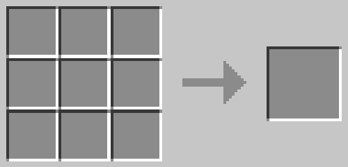
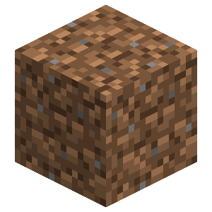
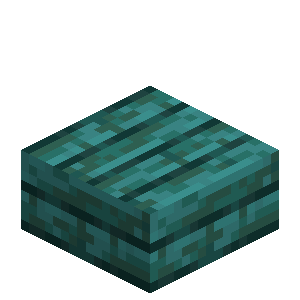
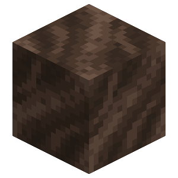
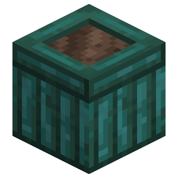
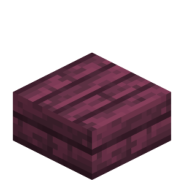
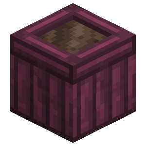

About
The planter box is a decorative block that can be dynamically expanded by placing more planter boxes next to each other!
Crafting
The planter box can be crafted with slabs and a soil block (dirt/soul soil):
Overworld




Nether





Expansion
Planter boxes of different types won't connect. Planter boxes need to share the same wood type to expand.
Sapling Behavior
When a sapling grows into a tree the planter box underneath will not be converted to dirt.
Farming
Planter boxes that are made from overworld wood allow overworld plants to thrive in them! Nether wood planter boxes on the other hand only support nether plants. These plants will grow in the planter box the same way that they would if they were planted on wet farmland or soul soil!
Supported Plant Block Tags
Overworld Planter Boxes
Nether Planter Boxes
Planter Box
| Renewable | Yes (Crafting) |
| Stackable | Yes (64) |
| Tool | Any tool, but the axe is the quickest! |
| Blast Resistance | 2.5 |
| Hardness | 2.5 |
| Luminous | No |
| Transparent | No |
| Catches fire from lava | Yes |